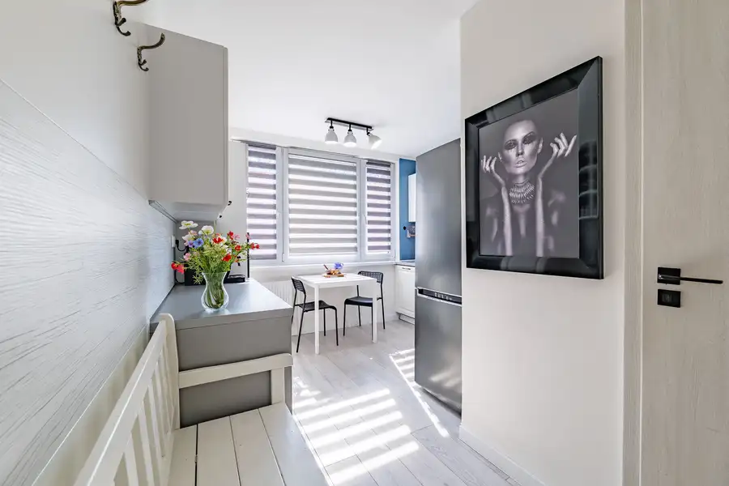
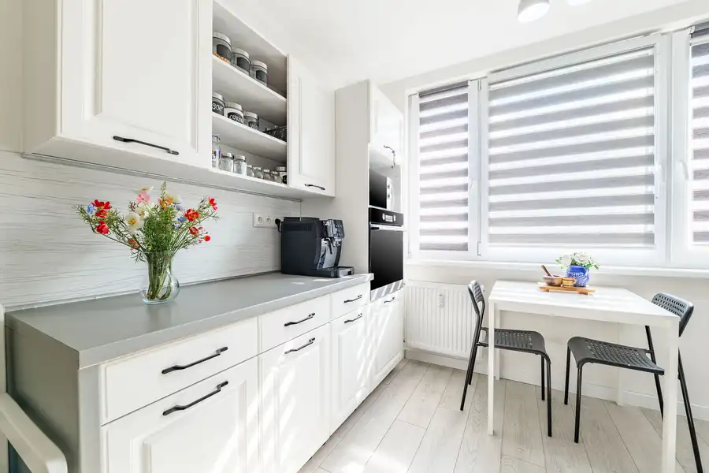
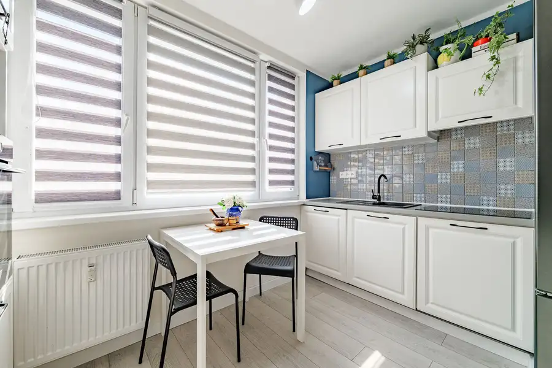
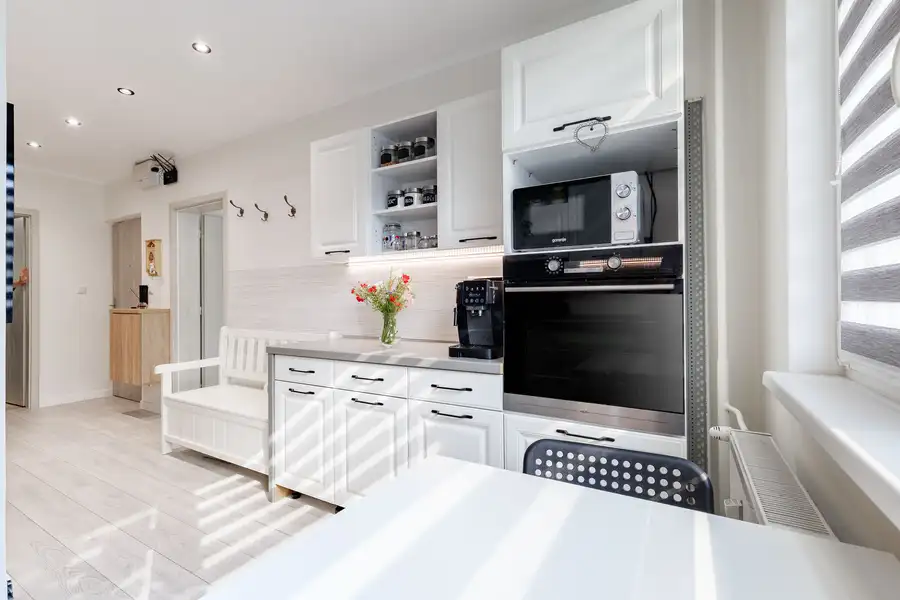
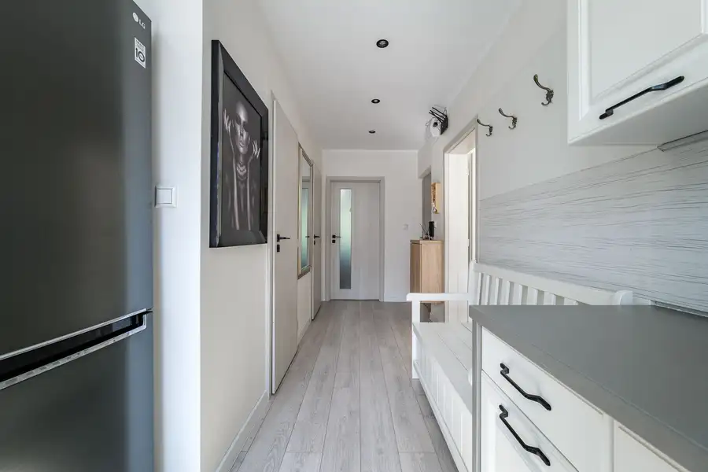
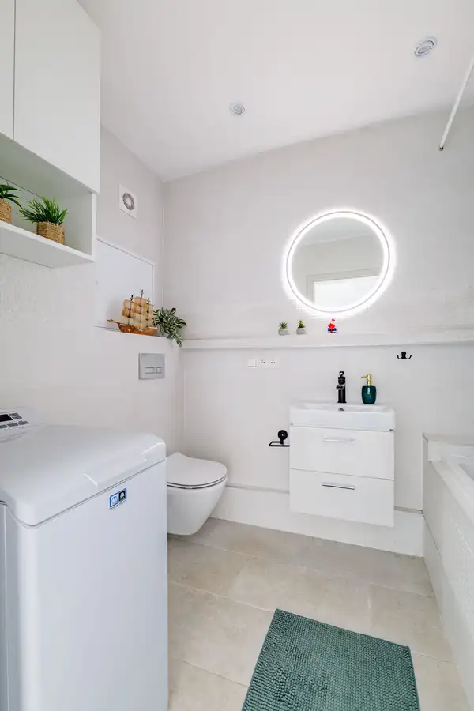
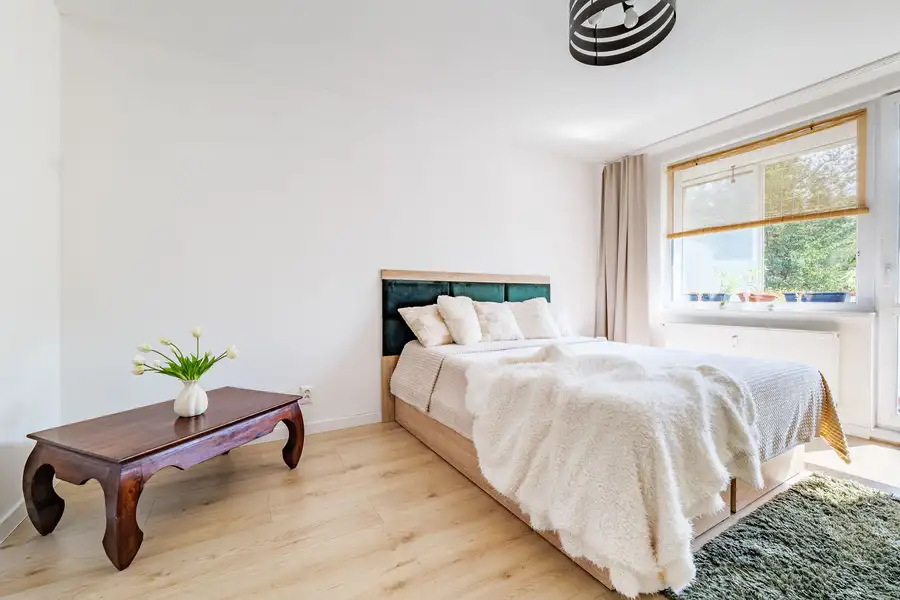
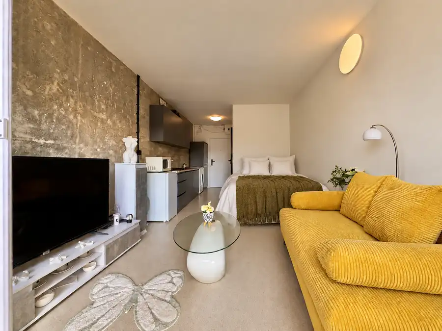
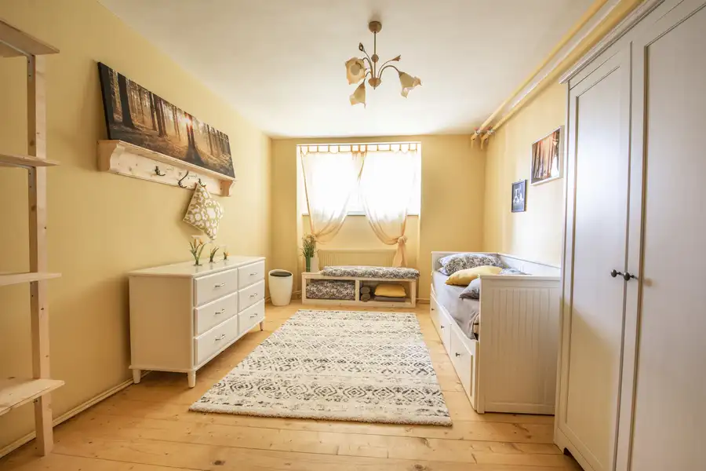
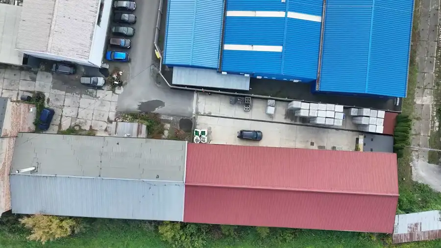

Predaj 2 izbový byt po rek. loggia Námestie kozmonautov
Nad jazerom, Košice







- Dispozícia2-izbový
- Plocha51 m²
- Poschodie3.
- StavKompletná rekonštrukcia
- VlastníctvoOsobné
- Energetická triedaB
O nehnuteľnosti
Mestská časť Košice IV. - Nad jazerom je Vašou srdcovkou a chcete sa stať majiteľom bytu v tejto lokalite?Chcete kúpiť nehnuteľnosť ako investíciu s výbornou možnosťou prenajímania a s nízkymi nákladmi na byt? Chcete byť vlastníkmi bytu s loggiou a nádherným výhľadom na zeleň?Ak áno, tak tento byt je určený Vám - Vitajte doma! Realitný maklér ALENA KATONOVÁ a RK Atomia Vám ponúka príjemné bývanie v priestrannom, pekne zrekonštruovanom 2 - izbovom byte s LOGGIOU v osobnom vlastníctve, ktorý sa nachádza vo vyhľadávanej MČ Košice - Nad jazerom, ul. Námestie kozmonautov. Byt pozostáva z 2 obytných miestností, kuchyne a príslušenstva, ktoré tvorí kúpeľňa s toaletou, predsieň, šatník v byte, pivnica v suteréne. Jeho úžitková výmera podľa portálu katastra je 51 m2 (podlahová plocha bytu + pivnica). V užívani s loggiou je 55 m2. Byt sa nachádza na 3.p./7.p.. Zamilujete si danú lokalitu tak ako terajší majitelia.DISPOZÍCIA A ORIENTÁCIA BYTUByt tvoria: 2 izby + kuchyňa + kúpeľňa s toaletou + šatník + LOGGIA + pivnica v suteréne za zamrežovanými dverami (suchá, čistá, plechové dvere). Vstupy do všetkých izieb, kuchyne a príslušenstva je samostatný - ideálne v prípade prenájmu nehnuteľnosti. Byt je orientovaný na severovýchod a juhozápad. Byt má veľmi dobrú klímu. 🔑 Základné infoREKONŠTRUKCIA BYTU🛠️ Kompletná Rekonštrukcia realizovaná v r. 2023Rozvody a siete: v celom byte sú nové elektrické rozvody, v jadre a kuchyni sú nové rozvody vody a odpadu. Stúpacie vedenia v jadre sú taktiež menené. Na radiátoroch sú merače tepla a termostatické hlavice. Byt je napojený na teplo z TEHO KE. Okná: Byt má plastové okná (termoizolačné dvojsklo) a rolety deň a noc.Podlahy: v obytnej miestnosti sú plávajúce laminátové podlahy, v kuchynskom kúte je plávajúca laminátová podlaha, v predsieni je plávajúca laminátová podlaha, v kúpeľni s WC je dlažba. Steny a stropy: znížené stropy, stropné svietidlá v izbách, led svietidlá v priedsieni, kúpeľni, nové omietky na stenách. Dvere: nové vstupné dvere - vprotipožiarne a aj Interiérové dvere. Dispozícia bytu sa menila - otvorený a prepojený priestor predsiene s kuchyňou.KUCHYŇAKuchyňa je pre panelákové byty atypická - prepojená so vstupnou chodbou. Kuchynská linka na báze dreva je vyrobená na mieru a má dostatok úložného a pracovného priestoru. V kuchynskej linke je osadený granitový drez s pákovou batériou, vstavané spotrebiče - indukčná varná doska, elektrická rúra, umývačka riadu. Zástena kuchynskej linky je keramický obklad. Skrinky s dojazdom. Vo Vašej novej kuchyni sa nemusíte báť, že sa po namáhavom celom dni ešte nabeháte...stačí pár krokov a všetko máte poruke na prípravu dobrej večere. KÚPEĽŇAV novovymurovanej kúpeľni je osadená vaňa, umývadlo v skrinke so zrkadlom, pračka a závesná toaleta s podomietkovým systémom splachovania, kúpeľňový nábytok. Na stenách je keramický obklad a na zemi dlažba. Kúpeľna je odvetrávaná do stupačiek. 🏢 Bytový domBytový dom je po kompletnej rekonštrukcii : nová a zateplená strecha, zateplenie fasády, schodiská, vstupné brány, elektrina na spoločných priestoroch. Svetlo je na senzor. Veľmi pekný priestor v pivniciach. BD má energetický certifikát.ĎALŠIE INFORMÁCIEByt je v osobnom vlastníctve, možnosť financovania kúpy bytu formou hypotekárneho úveru. Dohoda na kúpnej cene je možná.Susedia sú bezproblémoví, tichí a slušní.LOKALITAPokojná a tichá lokalita, vhodná na bývanie, so skvelou dostupnosťou všetkých doležitých výhod veľkomesta - zastávky MHD, obchodné centrá, rýchly dojazd do centra električkami. Viac na jazerokosice.sk. Lokalita sa vyznačuje vynikajúcou občianskou vybavenosťou: MŠ, ZŠ, SŠ, poliklinika, pošta, kostoly, nové ohradené detské ihrisko priamo pred obytným domom, volejbalové a multifunkčné ihriská, športový klub, nákupné strediská, veľké obchodné centrá Fresh, Billa, Tesco, Kaufland, Lidl. Pred obytným domom sú nádherné predzáhradky, o ktoré sa starajú obyvatelia obytného domu, čo svedčí o kultúre susedov. Jazero, cyklistické a korčuliarske trasy a okolitá zeleň ponúka dostatok priestoru na relax aj športové aktivity - plávanie, vodné lyže, rybárčenie, zimné korčuľovanie, hokej. Tento byt si Vás určite získa. Dajte mu šancu a pôjdeme si ho spoločne pozrieť. Bez váhania ma kontaktujte na t.č. 0907900717 alebo mi napíšte na alenkakatonova@gmail.com. Ďakujem, dopočutia a dovidenia. Exkluzívne pre Vás v našej realitnej kancelárii.Cena nehnuteľnosti je uvedená vrátane sprostredkovateľskej provízie, ktorá v sebe zahŕňa kompletný servis a službu pre Vás spočívajúcu: v serióznom jednaní za jedným stolom o podmienkach a financovaní kúpy za účasti troch strán - predávajúceho, kupujúceho a nás, v príprave a podpise zmluvy o budúcej zmluve, v príprave a podpise kúpnej zmluvy, návhru na vklad kúpnych zmlúv a odovzdávacieho protokolu, v prípade potreby príprava splnomocnenia na zastupovanie vo veci predaja a kúpy, v nezávislom nájdení pre Vás najvhodnejšieho a najlacnejšieho hypotekárneho úveru z bánk pôsobiacich na našom trhu, dohodnutie a realizáciu obhliadky so súdnym znalcom, platby za overenie podpisov na kúpnych zmluvách u notára, platby za podanie štandardného návrhu kúpnych zmlúv na kataster, platby za podklady z katastra nehnuteľnosti potrebné k čerpaniu hypotekárneho úveru, účasť makléra na odovzdaní nehnuteľnosti a súčinnosť pri prepisovaní médií.Využite našu pomoc pre Vás v zabezpečení finančných prostriedkov na kúpu bytu našim nezávislým finančným poradcom.
Parametre
- Cena vrátane energií
- Nie
- Druh
- 2 izbový byt
- Dátum zverejnenia
- 05. 10. 2026
- Energetická náročnosť
- Z klasických materiálov
- Energetický certifikát budovy
- B
- Orientácia
- Juhozápadná, Severovýchodná
- Plocha lodžie
- 3.47 m²
- Podlažie
- 3
- Počet izieb / miestností
- 2
- Počet lodžií
- 1
- Počet pivníc
- 1
- Rok poslednej rekonštrukcie
- 2023
- Stav nehnuteľnosti
- Kompletná rekonštrukcia
- Telekomunikácie
- Internet
- Typ
- Predaj
- Typ konštrukcie
- Panelová
- Vlastníctvo
- Osobné
- Vybavenie
- Lodžia, Pivnica, Verejné parkovanie, Sklad, Výťah
- Vykurovanie
- Ústredné
- Úžitková plocha
- 51 m²
Kde to je


Mohlo by Vás zaujímať

BytNové 127 000 €Pekná garsónka s loggiou projekt Kosmalt Košice II. Terasa Západ, Košice 24 m²1. podlažie
BytNové 215 900 €Predaj 3 izbový byt Košice I. Staré mesto Svätoplukova ul. Staré Mesto, Košice 3-izbový77 m²
Komerčné priestoryNové 550 000 €Predaj - Košice I. - Sever, výrobná a skladová hala Sever, Košice 1172 m²